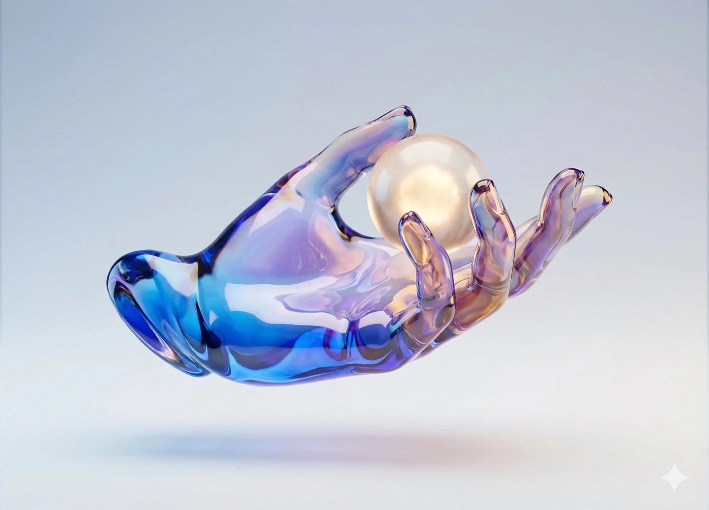
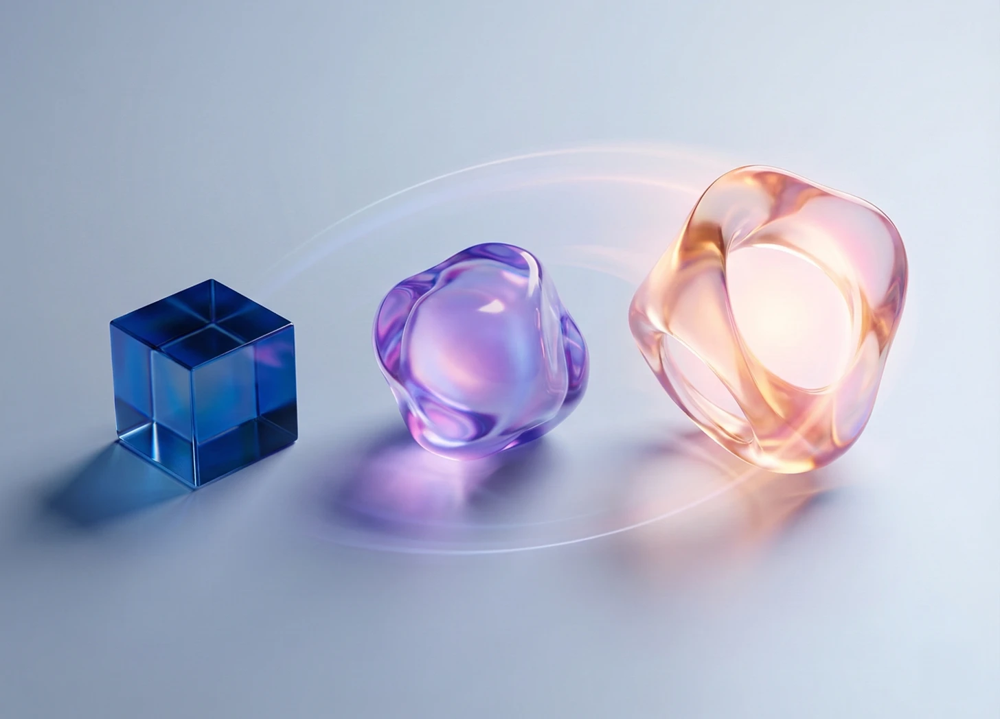

公開済み

Essay 14
何をAIに任せ、何を自分で握るか。そしてその境界線が動く理由
オートノミーマップとオートノミーダイヤルは別物です。どちらも信頼の蓄積とともに変化していきます。

Essay 13
AIにできる仕事と、AIに渡してはいけない判断。その境界線を、あなたのプロダクトは勝手に引いている。
チームはAIプロダクトを「機能的な仕事」に合わせて設計する。「どの判断をユーザー自身が握りたいか」を問うチームは、ほとんどいない。
Essay 12
デザイナーの仕事は消えなかった。上流へ移動した。
UIを作る仕事から、人間とAIの協働システムを設計する仕事へ。この変化が本当に求めるものと、多くの人が見誤っている準備の話。

Essay 11
Renは「速く作るAI」ではない。チームの合意と判断を強くするAIです
Human↔AIだけでなく、人間同士とAIが混在する現場に対応し、段階運用と高速スプリントを使い分けられる協働設計。

Essay 10
動くAIを設計するための6つのパターン——そしてなぜほとんどのプロダクトがそれを間違えるのか
エージェンティックAIの時代に最も重要なインタラクションデザインの問題。実際に機能するものとしないものの事例とともに。

Essay 09
Autonomy Dial：AIプロダクトで誰も話していない最も重要なデザイン上の決断
すべてのAIプロダクトはAIがどこまでやるかを決めている。ほとんどは、それを間違っている。

Essay 08
コンシューマー向けのAIオペレーティングシステムを設計する前に、私はデザイナー向けにそれを作っていた
チームレベルでAIインフラを構築した経験が、Agentic OSが本当に何を必要とするかを教えてくれた。

Essay 07
だれも本気で解いていない「知識アーキテクチャ問題」と、その解き方
多くのAI導入が止まる理由は、モデルの性能ではない。その前段の設計にある。

Essay 06
エンタープライズAIは導入で失敗するのではない。設計で失敗する
ボトルネックは人材不足ではなく構造不全。知識基盤・エージェント役割・運用統合の欠落を現場視点で解く。

Essay 05
AI導入を静かに殺しているのは、誰も不満を言わない摩擦だ
アンケートなし。仮説の洗い出しもなし。正しい問いを、正しいやり方で聞くだけ。
Essay 04
AIは使われていた。でも業務は変わらなかった。16人インタビューで見えた転換点
Verizonの現場で40以上の摩擦点を可視化し、役割特化のAI設計でデザイン業務を戦略レベルへ戻した実践記。

Essay 03
30年前のリサーチ手法が、いまAIの設計言語になっている。ほとんどのチームはその存在すら知らない。
このフレームワークは30年前からあった。いま、ようやくその本番が来た。

Essay 02
インターフェースは、設計の甘さから私たちを守ってくれていた。AIがその緩衝材を取り払った。
デザインに起きている変化を、誇張せず正直に見つめる。

Essay 01
AIは実行している。何を実行すべきかを、誰も定義していない。
誰もがAIを作っている。それが人のために何をすべきかを問うている人は、ほとんどいない。それはデザイナーの仕事だ——そしてかつてないほど重要になっている。